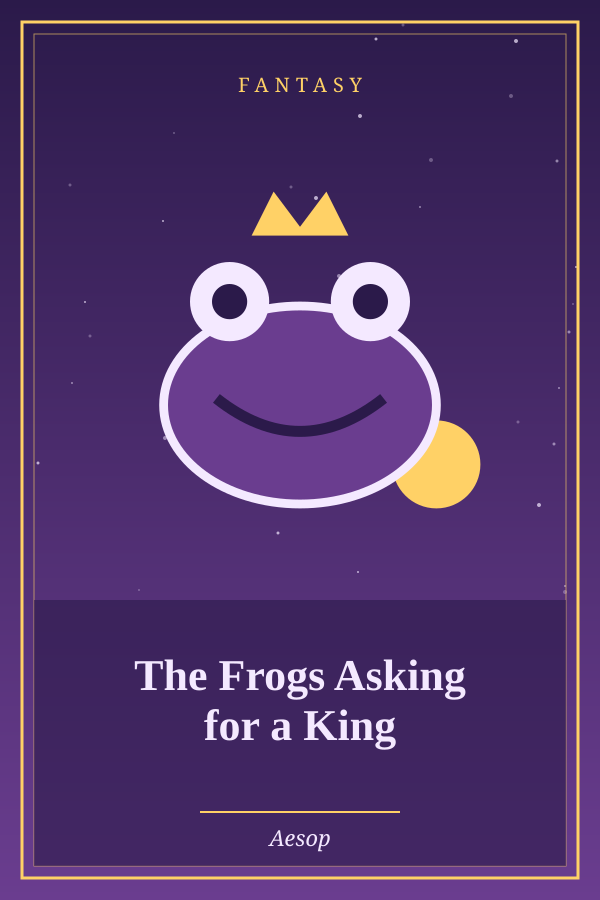

The Frogs Asking for a King
Genre: Fantasy
Synopsis
The frogs beg Jupiter for a ruler, and each king he sends is worse than the last.
Chapter 1: The Frogs Asking for a King
The Frogs, grieved at having no established Ruler, sent ambassadors to Jupiter entreating for a King. Perceiving their simplicity, he cast down a huge log into the lake. The Frogs were terrified at the splash occasioned by its fall and hid themselves in the depths of the pool. But as soon as they realized that the huge log was motionless, they swam again to the top of the water, dismissed their fears, climbed up, and began squatting on it in contempt. After some time they began to think themselves ill-treated in the appointment of so inert a Ruler, and sent a second deputation to Jupiter to pray that he would set over them another sovereign. He then gave them an Eel to govern them. When the Frogs discovered his easy good nature, they sent yet a third time to Jupiter to beg him to choose for them still another King. Jupiter, displeased with all their complaints, sent a Heron, who preyed upon the Frogs day by day till there were none left to croak upon the lake.